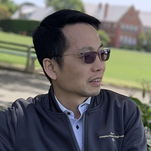
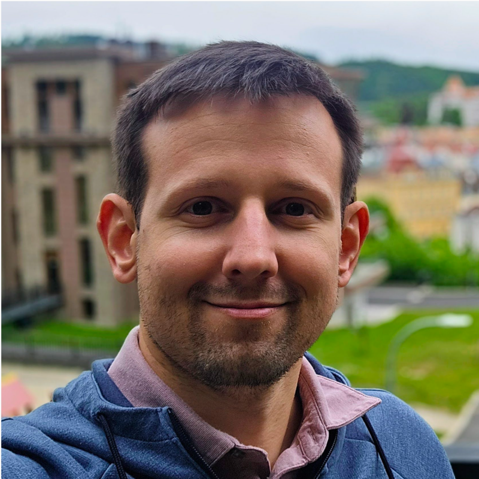
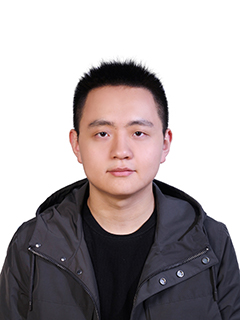
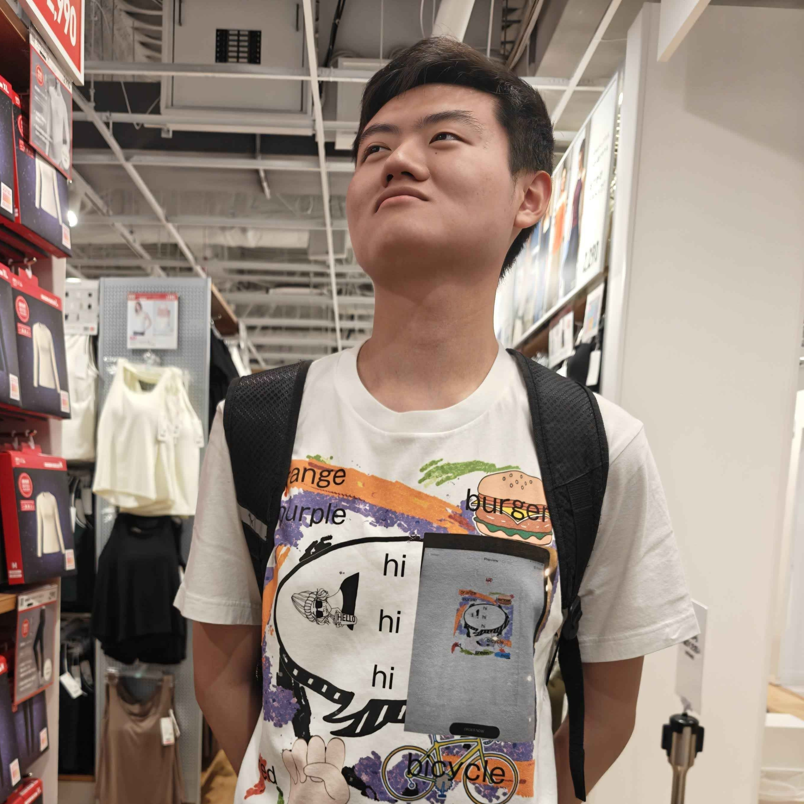

From Perception to Simulation: The Emergence of World Models in Multi-modal Reasoning
CVPR 2026 Tutorial
June 3rd, 2026, 2 PM (GMT-6, MT, Denver Time Zone)
Room 301/302, Colorado Convention Center, Denver, Colorado
Introduction
World models are rapidly reshaping artificial intelligence, evolving from systems that passively perceive the world into engines capable of simulating, reasoning, and planning within it. This tutorial examines how recent advances in generative modeling, self-supervised learning, and multimodal architectures are enabling machines to move beyond recognition and prediction toward mental simulation, counterfactual reasoning, and decision making. We will explore the foundations of world models, approaches for learning dynamics from visual and multimodal data, and the integration of planning and reasoning. The tutorial highlights connections between video generation, diffusion models, discrete representations, and embodied AI, while addressing key challenges such as grounding, causality, physical consistency, and evaluation. Designed for researchers, practitioners, and students, this session provides both conceptual insights and practical perspectives on building AI systems that reason about environments rather than merely interpreting them. Our tutorial attracted more than 300 attendees in person.
World Model Tutorial Schedule
| Time | Session | Speaker |
|---|---|---|
| 14:00 - 14:10 |
Opening Remark: Motivation and Overview [Abstract][Slides]
Abstract: This tutorial explores the paradigm shift in computer vision from perception to simulation through multimodal world models. While traditional AI focuses on static scene recognition, world models bridge the gap between seeing and deciding by integrating vision, video, language, and action into a shared latent structure. This enables AI to transition from simple recognition to temporal reasoning, future prediction, counterfactuals, and action planning, turning perception into a robust foundation for internal physical simulation and causal reasoning.
|
|
| 14:10 - 14:40 |
Invited Talk: From Chain-of-Thought to Chain-of-State: Why Capable Models Must Predict the World Back [Abstract][Slides]
Abstract: Recent years have witnessed rapid progress in models that generate, predict, and act across increasingly rich environments, from video generators and embodied agents to interactive software agents. These systems are often grouped under the term “world models,” yet defining the term remains elusive, as the term has become overloaded: world models may be explored through the lens of video, 3D, latent dynamics, physics simulations, robotics, etc. This tutorial presents a unified view of world models as state-transition predictors across many kinds of worlds: visual, physical, textual, computational, and social. The tutorial will connect recent work on multimodal visual reasoning, reinforcement world model learning, environment-token prediction for CLI agents, RLVR-trained world models, world-action models, and adversarial reasoning models to argue that the next frontier for increasingly capable models is moving from chain-of-thought to chain-of-state: i.e., from generating plausible intermediate reasoning to maintaining, simulating, and updating the state of the world their actions affect.
|
|
| 14:40 - 15:10 |
Invited Talk: Genie 3: Generating interactive photorealistic worlds[Abstract][Slides]
Abstract: Genie 3 is a frontier video generative model for creating photorealistic interactive worlds that users can navigate and interact with in real-time. In this talk, we discuss its capabilities including real-time generation, interactivity, photoreal quality, world consistency, and grounding. We will also discuss its limitations and high-level research problems and applications for video world models.
|
|
| 15:10 - 15:50 |
Invited Talk: Towards Physics-Consistent Efficient Visual World Models [Abstract][Slides]
Abstract: Recent advances in large language models (LLMs) and multimodal large language models (MLLMs) have significantly enhanced the understanding and encoding of textual information. Leveraging these capabilities, a growing number of diffusion-based generative models have emerged for text-conditioned visual generation — spanning text-to-image, text-to-video, and text-to-3D tasks. While these models offer remarkable flexibility and produce increasingly realistic content as world models, they still face fundamental challenges: aligning precisely with user intent, maintaining spatial, view, and temporal consistency, and adhering to the laws of physics. In this talk, I will present several recent research projects from my group that attacks these challenges. For example, VLIPP integrates physics-informed priors to ensure text-to-video generation consistent with physics. UCPE introduces unified camera encoding to facilitate accurate camera controls, which we believe is critical for video generation as world models.
|
|
| 15:50 - 16:20 |
Invited Talk: VideoPhy: Physical Commonsense Evaluation in Video Generation [Abstract][Slides]
Abstract: Large-scale text-to-video generative models have demonstrated remarkable ability to synthesize realistic videos across diverse visual concepts, positioning them as candidates for general-purpose physical world simulators. However, it remains an open question how faithfully these models adhere to physical commonsense. We present the VideoPhy benchmark series to rigorously evaluate physical commonsense in text-to-video generation. VideoPhy introduces prompts grounded in real-world material interactions (solid-solid, solid-fluid, fluid-fluid), revealing that even the best-performing models at time of publication severely lack the ability to generate videos that adhere to both the given text prompt and physical laws. Building on this, VideoPhy-2 introduces an action-centric evaluation paradigm with 200 diverse real-world actions and fine-grained physical rule analysis, exposing deeper failure modes, particularly around conservation laws such as mass and momentum. Both benchmarks rely on human evaluation to ensure grounded, reliable assessment, and each introduces an automatic evaluator to enable scalable evaluation of newly released models. Together, our benchmarks show that current video generative models fall significantly short of physically plausible world simulation, and highlight key directions for future research.
|
|
| 16:20 - 16:50 |
Invited Talk: Cosmos 3: Omni World Foundation Models for Physical AI[Abstract][Slides]
Abstract: Foundation models are rapidly expanding beyond language and vision toward systems that can understand, simulate, and interact with the physical world. In this talk, I will introduce Cosmos 3, a new family of omni world foundation models for Physical AI that jointly process and generate language, images, video, audio, and action sequences within a unified Mixture-of-Transformers architecture. Cosmos 3 supports highly flexible multimodal input-output configurations, allowing a single model to operate as a vision-language model, video generator, world simulator, and world-action model. I will discuss the architectural design and multimodal training pipeline, as well as the challenges of building scalable world models that unify perception, reasoning, simulation, and action generation.
|
|
| 16:50 - 17:25 |
Invited Talk: Toward World Models: Geometry, View Synthesis, and Visual Reasoning[Abstract][Slides]
Abstract: Recent advances in dynamic scene reconstruction, view synthesis, and multimodal reasoning are rapidly shaping the development of AI world models. Methods such as DUSt3R show that geometry and motion can now be recovered from casually captured images and videos, while neural rendering and view synthesis enable realistic generation of unseen viewpoints. At the same time, multimodal reasoning models are becoming increasingly capable of understanding object relationships, scene dynamics, and physical interactions.
This talk will discuss how these directions are converging toward unified world models that can reconstruct, generate, and reason about dynamic environments. I will highlight recent progress in dynamic 3D/4D reconstruction, geometry-aware generation, and physically grounded visual reasoning, and discuss their implications for embodied AI, robotics, and interactive visual understanding.
|
Due to a last-minute change, this talk was presented by Ming-Hsuan Yang's PhD students: Haobo Yuan, Hsin-Ying Lee, Weijie Lyu, and Freeman Cheng. |
Organizers

Yujun Cai
Staff Research Scientist at Ant Group, Lecturer at University of Queensland
Yujun Cai is a Lecturer in the University of Queensland in Australia and a Staff Research Scientist in Ant Group USA. Before that, she was a Senior Research Scientist in Meta Reality Lab. Her research lies in multi-modal human perception, vision-language models, and natural language processing. She obtained her PhD. degree from Nanyang Technological University in Singapore.

Jianfei Cai
Full Professor at Monash University
Jianfei Cai is a Professor at Faculty of IT, Monash University, where he had served as the inaugural Head for the Data Science & AI Department. Before that, he was Head of Visual and Interactive Computing Division and Head of Computer Communications Division in Nanyang Technological University (NTU). His major research interests include visual computing, computer vision, and multimedia. He is a co-recipient of paper awards in ACCV, ICCM, IEEE ICIP and MMSP, and a winner of Monash FIT’s Dean's Researcher of the Year Award and Dean's Award for Excellence in Graduate Research Supervision. He serves or has served as an Associate Editor for TPAMI, IJCV, IEEE T-IP, T-MM, and T-CSVT as well as serving as Senior/Area Chair for CVPR, ICCV, ECCV, ACM Multimedia, NeurIPS, ICLR and IJCAI. He was the leading General Chair for ACM Multimedia 2024. He is a distinguished member of ACM and a Fellow of IEEE.

Yiwei Wang
Assistant Professor at University of California, Merced
Dr. Yiwei Wang was an Applied Scientist in Amazon (Seattle) in 2023 and a Postdoc in UCLA NLP Group in 2024. He obtained his Ph.D. degree from National University of Singapore in 2023. Currently, he leads the UC Merced NLP Lab, where his team explores cutting-edge approaches to diffusion llms, reasoning multi-modal llms, and their applications in medicine, advertising, risk detection, signal processing, etc.

Ming-Hsuan Yang
Full Professor at University of California, Merced
Ming-Hsuan Yang is a Professor at University of California, Merced, and a Research Scientist at Google DeepMind. His research has received numerous honors, including Google Faculty Award (2009), NSF CAREER Award (2012), NVIDIA Pioneer Research Awards (2017, 2018), and Sony Faculty Award (2025). He has received Best Paper Honorable Mentions at UIST 2017 and CVPR 2018, Best Student Paper Honorable Mention at ACCV 2018, Longuet-Higgins Prize (Test-of-Time Award) at CVPR 2023, Best Paper Award at ICML 2024, and Test-of-Time Award from WACV 2025. He has been recognized as a Highly Cited Researcher from 2018 to 2025. He currently serves as Associate Editor-in-Chief of IEEE Transactions on Pattern Analysis and Machine Intelligence (PAMI) and as an Associate Editor of International Journal of Computer Vision (IJCV) and Transactions on Machine Learning Research (TMLR). He is a Fellow of IEEE, ACM, AAAI, and AAAS.
Invited Speakers

Kai-Wei Chang
Full Professor at UCLA
Kai-Wei Chang is a Professor in the Department of Computer Science at the University of California Los Angeles. His research interests include designing trustworthy natural language processing systems and developing multimodal models for vision-language applications. Kai-Wei has published broadly in NLP, AI, and ML. His awards include the Sloan Fellow (2021), AAAI Senior Member (2023), EMNLP Best Long Paper Award (2017), and KDD Best Paper Award (2010). He is elected as an officer of SIGDAT, the organizer running EMNLP. Additional information is available at http://kwchang.net/

Ming-Yu Liu
Vice President of Research at NVIDIA
Dr. Ming-Yu Liu is a Vice President of Research at NVIDIA and an IEEE Fellow. He leads NVIDIA Cosmos Lab, where he advances Generative AI for Physical AI — building world foundation models that allow machines not just to perceive the world, but to simulate, reason about, and interact with it.
Hang Qi
Staff Research Engineer at Google
Dr. Hang Qi is a Staff Research Engineer at Google DeepMind specializing in computer vision and machine learning. With nearly eight years at Google, he has led and contributed to research and engineering across Google Research and DeepMind, focusing on large-scale vision, multimodal systems, and generative media models. He holds both a Ph.D. and M.S. in Computer Science from UCLA.

Dan Kondratyuk
Co-Founder at rekursiv.ai
Dan Kondratyuk is a Research Scientist specializing in large-scale multimodal generative systems, spanning video, image, audio, and language models. He is the first author of VideoPoet, an LLM for zero-shot video generation that received the ICML 2024 Best Paper Award. Previously at Google, he developed MoViNet for real-time mobile video classification and contributed to large-scale LLM and multimodal training infrastructure.

Haobo Yuan
PhD Student at University of California, Merced
Haobo Yuan is a PhD student at UC Merced, working under the supervision of Prof. Ming-Hsuan Yang. His research focuses on advancing multi-modal large language models, visual reasoning, and image/video generation.
Hsin-Ying Lee
PhD Student at University of California, Merced
Hsin-Ying Lee is a PhD student at UC Merced, advised by Prof. Ming-Hsuan Yang. His research focuses on image and video generation.

Weijie Lyu
EECS PhD Candidate at University of California, Merced
Weijie Lyu is a third-year EECS PhD candidate at University of California, Merced, advised by Prof. Ming-Hsuan Yang. His research interests are 3D and 4D reconstruction and video generation.

Freeman Cheng
EECS PhD Student at University of California, Merced
Freeman Cheng is a first-year EECS PhD student at UC Merced advised by Prof. Ming-Hsuan Yang. He is interested in feedforward 3D reconstruction.